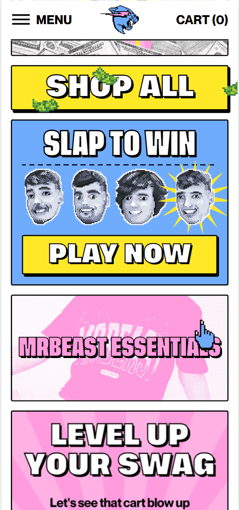

White Space
Apple
White space is a design prinicple based on having a lot of free space on the page to make it look clean. It improves the user's visual experience. It doesn't overload the page with information and picture, but rather focuses on being minimalistic.
Fitt's Law
Eat Doughy
Fitt's Law presicts the speed o human movement/reaction. The closer and more conveniet an object is from a person, the more likely the person it select it. In this case the checkout button is conveniently at the bottom of the cart page. It is likely that the person is online shopping for cookies on the phone, and the checkout button being on the button of the page is close to their thumbs, which more people use to navigate.
Colors
Shop Mr Beast
That is a very bright and interactive page. It elicits emotional reaction from a user with the variety of bright colors, and different buttons/reactions that draw users' attention and interest. The website's colors fit the style and the feel of the shop.